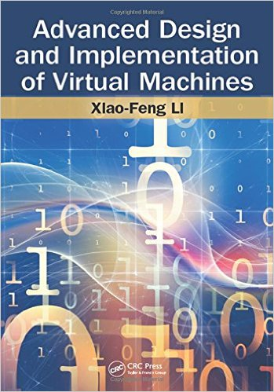
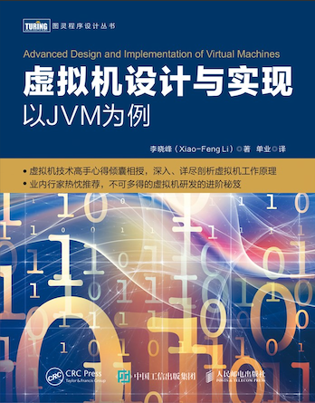
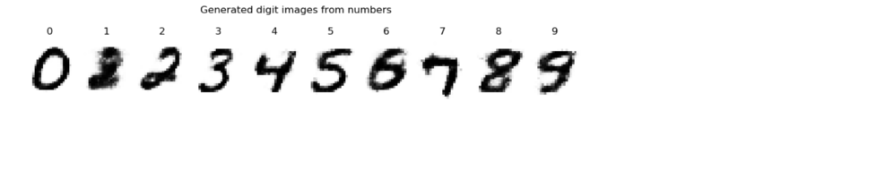
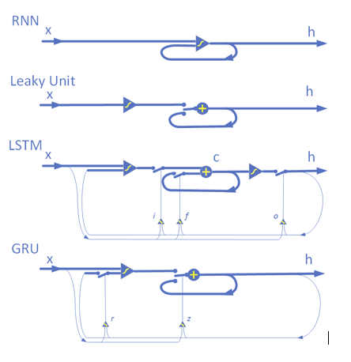
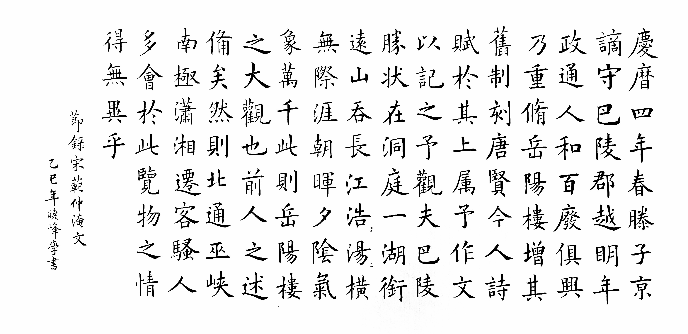
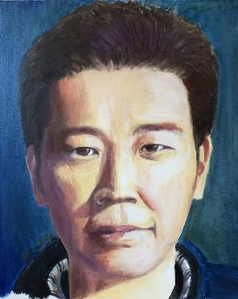

Xiao-Feng Li (Mason)
Welcome to my presonal homepage. Here is my LinkedIn profile, technical blog, github repos, email , and my PGP key.
A technical book written by me: "Advanced Design and Implementation of Virtual Machines" (464 pages) published by CPC Press.
Note it is about language runtimes, rather than system virtualization. (TOC in Google Books Amazon store)
Publishing house Turing Press purchased the Chinese copyright and publised a translated Chinese version. (Dangdang book store)


Some personal updates (not affiliated with my current and ex-employers):
- (2025-8-10) I wrote up an analysis on the Runtime Engine of Google A2A (agent to agent) design. The A2A server positions itself between a client and an actual agent, as a standardized proxy agent with its own lifecycle management, ensuring that clients see a consistent and predictable view of tasks regardless of the agent specific Implementation.
- (2025-08-08) Google ADK has an elegant architecture design, while still taking time to mature. I designed a few development patterns for the human-in-the-loop multi-turn multi-agent system that can run with adk run/web: Chained-agent interaction, Callback-intercept interaction, and Custom-agent interaction, using a story writer for the example.
- (2025-07-11) AI-friendly knowledge base will be the key asset in future software stack of both enterprise and personal, when the major logic is delegated to AI agents. To demonstrate the idea, I wrote a simple code toturial using a personal location profiler as the example that combines knowledge graph, MCP tool, and a chat agent.
- (2023-05-20) I gave a presentation in an innovation forum on: Operating system in the era of AI, about my thoughts of how the AI may impact edge OS design.
- (2020-01-25) I did a brief survey and discussion on current technologies in: Trusted execution environment, such as Intel SGX, AMD SEV, ARM TrustZone, Microsoft VSM, etc.
- (2020-01-18) I put together some thoughts on design of next generation OS: OS design for the future of a connected world.
- (2019-10-01) I gave a presentation to an OS research lab: Discussions on Asynchronous Programming APIs.
- (2016-10-01) I wrote a series of deep-learning tutorial code in raw python (without any DL framework) to mentor a research programm of my community as a volunteer. The series is arranged from the most basic to gradually more advanced topics: perceptron, linear regression, multi-layer perceptron, convolution network, recurrent network, LSTM, RBM, DBN ...
Here is a generated image by DBN after trained with MNIST data:

Here is a conceptual illustration for the difference between LSTM and GRU:

- (2013-02-10) Some friends found this presentation was useful to them: A very brief history of Intel CPU microarchitectures.
- (2012-10-11) I gave a presentation to a software group: Managed Runtime Technology: General Introduction.
- (2012-09-18) I gave a presentation to a research lab: Android overview - from a system design perspective.
- (2011-11-23) I prepared a series of slide decks on the software engineering methodology of "user experience optimization" with Google Android:
- Overall methodology of quantify and optimize User Interactions with Android devices (Some details).
- The Android Workload Suite used for Android user interactions evaluation (Some details).
- The Android UXtune toolkit used to assist the analysis and optimization of Android user interactions (Some details).
- (2009-04-12) I prepared a quick guide on Tick design, the Harmony concurrent GC, for any people who are interested in Tick or in concurrent GC implementation.
- (2008-08-01) I presented one of the Harmony GC algorithms: A Fully Parallel LISP2 Compactor, at LCPC2008. The compactor is used in certain collection scenarios.
- (2008-04-09) I wrote a quick hacking guide on Apache Harmony GC, hoping it is useful for people interested in GC development. It is only a start though.
- (2008-03-28) I gave a talk on Parallel Garbage Collection in Shanghai Many-Core Workshop2008, arranged by gelato.org.
- (2007-10-01) We prepared a design overview on DRLVM, the JVM of Apache Harmoy, for OSSummit Asia 2007. (The conference was moved to 2008).
- (2007-04-22) I wrote an overview on Apache Harmony GCv5 design on its current status.
Some code I wrote just for fun, and has been adopted by other people in their projects:
- elf.zip: an ELF file format parser and linker written in Java. The test file with it shows how to use it. (Released to public domain.)
- x86.zip: an X86 machine code emitter with convenient APIs. I used it with the ELF linker above to compose a compiler backend in Java. (Released to public domain.)
Technical papers:
- Yiwei Zhao, Song Jiang, Weidong Zhong, Lizhong Wang, Xiao-Feng Li, NEOP: A Framework for Distributed Mobile Apps on Heterogeneous Devices, IEEE 15th International Symposium on Autonomous Decentralized System, March 15-17, 2023.

- Xiao-Feng Li, Bin Ren, Xipeng Shen, Yanzhi Wang, CoCoPIE XGen: A Full-Stack AI-Oriented Optimizing Framework, Technical Report, arXiv:2206.10620, June 2022.
- Xiao-Feng Li, Yong Wang, Jackie Wu, Kerry Jiang,and Bing Wei Liu, Mobile OS Architecture Trends, Intel Technology Journal, 16(4):178-198, November, 2012.
- Shaoshan Liu, Jie Tang, Ligang Wang, Xiao-Feng Li, and Jean-Luc Gaudiot, Packer: Parallel Garbage Collection Based on Virtual Spaces, IEEE Transactions on Computers, 61(11):1611-1623, November, 2012.
- Xi Qian, Guangyu Zhu, Xiao-Feng Li, Comparison and Analysis of the Three Programming Models in Google Android, First Asia-Pacific Programming Languages and Compilers Workshop (APPLC), in conjunction with PLDI 2012, Beijing, China, June 14, 2012.
- Lijuan Xiao,Xiao-Feng Li, Cycler: Improve Heap Management for Allocation-intensive Applications with On-the-fly Object Reuse, Parallel and Distributed Computing and Systems(PDCS 2011), Dallas, US, Dec 14-16 2011.
- Yunan He, Chen Yang, Xiao-Feng Li, Improve Google Android User Experience with Regional Garbage Collection, IFIP International Conference on Network and Parallel Computing (NPC 2011), Changsha, China, Oct 21-23, 2011.
- Shisheng Li, Buqi Cheng, Xiao-Feng Li, TypeCastor: Demystify Dynamic Typing of JavaScript Applications, 2011 International Conference on High Performance Embedded Architectures & Compilers (HiPEAC 2011), Heraklion, Crete, Greece,Jan 24-26, 2011.
- Jiu-tao Nie, Buqi Cheng, Ligang Wang, Xiao-Feng Li, Vectorization for Java, IFIP International Conference on Network and Parallel Computing (NPC 2010), Zhengzhou, China, Sep 13-15, 2010.
- Xiaoming Gu, Xiao-Feng Li, Buqi Cheng and Eric Huang, Virtual Reuse Distance Analysis of SPECjvm2008 Data Locality, 7th International Conference on the Principles and Practice of Programming in Java (PPPJ09), Calgary, Alberta, Canada, Aug 27-28, 2009.
- Shaoshan Liu, Ligang Wang, Xiao-Feng Li, and Jean-Luc Gaudiot, Packer: an Innovative Space-Time-Efficient Parallel Garbage Collection Algorithm Based on Virtual Spaces, The 23rd IEEE International Parallel & Distributed Processing Symposium (IPDPS 2009), Rome, Italy, May 25-29, 2009.
- Shaoshan Liu, Ligang Wang, Xiao-Feng Li, and Jean-Luc Gaudiot, Space-and-Time Efficient Garbage Collectors for Parallel Systems, ACM International Conference on Computing Frontiers (CF 2009), Ischia, Italy, May 18-20, 2009.
- Qiong Zou, Xiao-Feng Li, and Long-Bing Zhang, Runtime Engine for Dynamic Profile Guided Stride Prefetching, Journal of Computer Science and Technology, 23(4): 633-643 July 2008.
- Xiao-Feng Li, Ligang Wang, and Chen Yang, A Fully Parallel LISP2 Compactor with Preservation of the Sliding Properties, Languages and Compilers for Parallel Computing (LCPC) 21st Annual Workshop, Edmonton, Alberta, Canada, July 31-August 2, 2008.
- Ming Wu and Xiao-Feng Li, Task-pushing: a Scalable Parallel GC Marking Algorithm without Synchronization Operations. IEEE Inter. Parallel and Distribution Processing Symposium (IPDPS) 2007, Long Beach, CA, March 2007.
- Chunrong Lai, Volosyuk Ivan, and Xiao-Feng Li, Behavior Characterization and Performance Study on Compacting Garbage Collectors with Apache Harmony., The Tenth Workshop on Computer Architecture Evaluation using Commercial Workloads (CAECW-10) held with HPCA-13. Phoenix, AZ, February 2007.
- Lixia Liu, Xiao-Feng Li, Michael Chen, and Roy Ju, A Throughput-Driven Task Creation and Mapping for Network Processors, 2007 International Conference on High Performance Embedded Architectures & Compilers (HiPEAC 2007), Ghent, Belgium, January 2007.
- Xiao-Feng Li, Chen Yang, Zhao-Hui Du, Tin-Fook Ngai, Exploiting Thread-Level Speculative Parallelism with Software Value Prediction. The 10th Asia-Pacific Computer Systems Architecture Conference 2005 (ACSAC05): 367-388, Singapore, October 24-26, 2005.
- Tao Liu, Xiao-Feng Li, Lixia Liu, Chengyong Wu, Roy Ju, Optimizing Packet Accesses for a Domain Specific Language on Network Processors. The 18th International Workshop on Languages and Compilers for Parallel Computing (LCPC 2005), Hawthorne, NY, USA, October 2005.
- Michael K. Chen, Xiao Feng Li, Ruiqi Lian, Jason H. Lin, Lixia Liu, Tao Liu, Roy Ju, Shangri-La: Achieving High Performance from Compiled Network Applications while Enabling Ease of Programming, Programming Language Design and Implementation 2005(PLDI'05), Chicago, IL, June, 2005.
- Xiao-Feng Li, Zhao-Hui Du, Chen Yang, Chu-Cheow Lim, Tin-Fook Ngai, Speculative Parallel Threading Architecture and Compilation, The 4th Workshop on Compile and Runtime Techniques for Parallel Computing, held in conjunction with the ICPP'05, Oslo, Norway, June 2005.
- Du, Zhao-Hui; Lim, Chu-Cheow; Li, Xiao-Feng; Yang, Chen; Zhao, Qingyu and Nagi, Tin-Fook. A Cost-Driven Compilation Framework for Speculative Parallelization of Sequential Programs. Programming Language Design and Implementation 2004(PLDI'04), Washington, DC, June 9-11, 2004.
- Li, Xiao-Feng; Yang, Chen; Du Zhao-Hui; Ngai, Tin-Fook; Software Value Prediction for Speculative Parallel Threaded Computations, First Value-Prediction Workshop, held in conjunction with ISCA-30, San Diego, California, June 7, 2003.
Some arts
- One of my Chinese calligraphy works:

- A logo I designed for LisoLeg, a Linux group. (LisoLeg in Chinese means "swift legs")
- My portait (in about 2005) doodled by myself.

- A stone seal I cut for my name.
Some books
- Learning Perl (Chinese version), which was translated by me from English. A programming bestseller in China.
- Linux Device Drivers (Chinese version), translated by LisoLeg from English. I was a core member of it.
Disclaimer: Contents here are only my personal opinions, and not that of ASF, my employers, or anyone else.
Last updated: 2025-12-25
{kind=link}